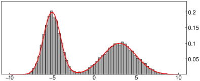
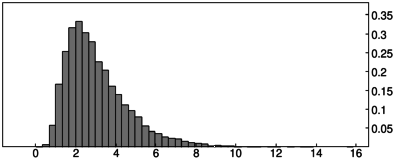
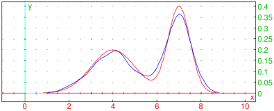
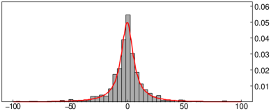
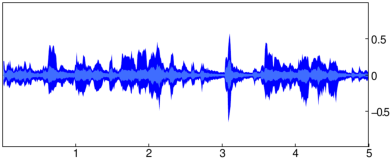

20.4.7 Analytic representation of a real signal
Hilbert transform is the key component of the analytic representation of a real signal
(see here for details).
Briefly, given a real signal u(t), its analytic representation is
ua(t)=u(t)+iH{u}(t), the main property of which is that its imaginary
part is the Hilbert transform of the real part, the latter being exactly the original signal.
As a consequence, the spectrum of ua does not contain negative frequency components.
The hilbert
command can find analytic representation ua of a discrete real signal u
by using the algorithm of Marple (1999) which uses FFT as a subroutine.
See Section 14.2.2 and Section 20.4.6 for other uses of hilbert.
-
To find ua, hilbert takes u, a list [u1,u2,…,un] of real numbers.
- hilbert(u) returns the analytic representation ua of u as
a list of complex numbers zi=ui+ivi for i=1,2,…,n, where
v=[v1,v2,…,vn] is the Hilbert transform of u.
- Note that, in order to obtain a well-behaved Hilbert transform of the input signal,
the latter should have the mean zero (or close to it). Namely, since H{c}=0
for c∈ℝ, the inverse transform is unable to restore the original signal if the
latter is shifted by a nonzero amount.
Examples
Given a signal defined by:
| f:=[0.7,0.2,-0.5,-0.6,-0.2,0.3,0.5,-0.1,-0.3]:; |
you get its analytic representation with
which is valid since
Indeed:
and
both return
|
| |
| ⎡
⎣ | 0.7,0.2,−0.5,−0.6,−0.2,0.3,0.5,−0.1,−0.3 | ⎤
⎦ |
| | | | | | | | | | |
|
To visualize the input signal and its Hilbert transform together, enter:
| listplot(f,color=blue,legend="f");
listplot(im(h),color=red,legend="H(f)"); |

The above image illustrates the fundamental property of the Hilbert transform:
it shifts the phase of the input signal by ± 90∘.
Instantaneous amplitude, frequency and phase
You can get instantaneous amplitude and frequency of the original signal
from its analytic representation. Since ua(t)=A(t)eiϕ(t) for
some A and ϕ, the instantaneous amplitude is A(t) and
the instantaneous (angular) frequency is given by
ω(t)=dϕ/dt. Indeed, this applies to the
original signal because u(t)=ℜ(ua(t))=A(t)cos(ϕ(t)) by Euler’s formula.
For sampled signals, ω(t) is obtained in radians per sample and, assuming that r
is the sample rate of u, the instantaneous frequency in Hertz is thus given by
f(t)=r/2πω(t). Since f(t)≤r/2 by Nyquist theorem and
ω(t)≥ 0, it follows that 0≤ω(t)≤π.
For a continuous, differentiable signal u, the instantaneous frequency can
be obtained as
|
ω(t)=−iN∗(t) N′(t)=ℑ | ⎛
⎝ | N∗(t) N′(t) | ⎞
⎠ | ,
(3) |
where N∗(t) denotes the complex conjugate of the normalized analytic signal
N(t)=ua(t)/A(t) and N′ the time derivative of N (Vesnaver, 2017).
The phase ϕ(t) is “wrapped” to [−π,π] because of the periodicity of
eiϕ(t). Therefore it may contain an arbitrary number of
first-order discontinuities when defined by ϕ(t)=arg(N(t)).
One way of defining the “unwrapped phase” for a causal signal u is:
|
ϕ(t)=ϕ0+ | ∫ | | ω(τ)dτ, t≥ 0,
(4) |
where ϕ0=arg(N(0)) and ω is computed from (3).
Indeed, ϕ in (4) is non-decreasing because ω(t)≥ 0.
Note that unwrapping the phase introduces uncertainties and requires user-defined
parameters; in the above definition, ϕ0 can have infinitely many values.
The instantaneous amplitude of u is obtained simply by calling the abs
command with ua as its argument. The vector of squared amplitudes is called the
energy of u.
The instfreq command finds instantaneous
frequency of a discrete signal u given its analytic representation ua.
-
instfreq takes one mandatory argument and one optional argument:
-
ua, the analytic representation of a real signal u,
which may be a vector (as returned by hilbert) or a symbolic expression.
- Optionally, x, a variable (by default x).
- instfreq(ua ⟨,x ⟩)
returns ω as a vector of phase advancements of ua in the
discrete case and the expression (3) in the continuous case.
Precisely, if ua=[z1,z2,…,zn], then ω is a vector of length n−1 with
components
| ωi=arg | ⎛
⎝ | zi∗zi+1 | ⎞
⎠ | ∈[0,π], i=1,2,…,n−1. |
The above formula handles phase wrapping.
- In the discrete case, ωi is the angular frequency of u at offset i+1,
where i=1,2,…,n−1.
The instphase command finds instantaneous
phase of a discrete signal u given its analytic representation ua, without wrapping.
-
instphase takes one mandatory argument and one optional argument:
-
ua, the analytic representation of a real signal u,
which may be a vector (as returned by hilbert) or a symbolic expression.
- Optionally, x, a variable (by default x).
- instphase returns ϕ as a cummulative-sum vector of
instfreq(ua) (adjusted so that the first element matches the
initial phase) in the discrete case and the expression (4)
in the continuous case.
- In the discrete case, ϕi is the phase of u at offset i, where i=1,2,…,n.
Examples
Sample the function x(t)=sin(20πsin(t))
in the segment [0,π/2] and apply the Hamming window:
| x:=evalf(linspace(0,pi/2,1000)):;
y:=hamming_window(apply(t->sin(20*pi*sin(t)),x)):; |
Compute the analytic representation of y and the relative error (in percentages)
made by reconstructing the original signal from h:
| h:=hilbert(y):;
norm(y+im(hilbert(im(h))))/norm(y)*100 |
The error is relatively small (about 2%), hence y is
applicable for further analysis (its analytic representation is
well-behaved).
The instantaneous amplitude is obtained by:
and the instantaneous frequency by
To plot y, a and f together, you can enter (f is scaled
arbitrarily to be visible in the amplitude axis):
| listplot(y);
listplot(a,color=green+line_width_2);
listplot(10*f,color=blue) |

As you can see in the image above, the instantaneous amplitude (shown
in green) forms an envelope of the original signal (shown in black), while
the instantaneous frequency (shown in blue) drops as the oscillations in the
original signal are slowing down (note that its values are nonnegative).
Continuous analytic signal.
To obtain the instantaneous frequency of a continuous signal you can
use (3) or the instfreq command. For example:
| x:=(t-3+(t-2)^2)/(1+(t-2)^4) |

To compute y=H{x}, enter:
|
| |
| | t2−6 t+7 |
|
| √ | | t4− | ⎛
⎜
⎝ | 8 | √ | | ⎞
⎟
⎠ | t3+24 | √ | | t2− | ⎛
⎜
⎝ | 32 | √ | | ⎞
⎟
⎠ | t+17 | √ | |
|
|
| | | | | | | | | | |
|
The analytic representation of x and its normalization are obtained by:
To animate unfolding of z(t) in the complex plane for 0≤ t≤ 10, enter:
| animation(seq([plotparam(z,t=0..s/5),vector(subs(z,t,s/5),color=blue)],s=1..50)) |

To plot the instantaneous amplitude A(t) against x(t), enter:
| plotfunc([x,abs(z)],t=0..10,color=[blue,black]) |

The instantaneous frequency of x is obtained by entering:
The unwrapped phase, according to the definition (4),
is now obtained by entering:
| iphas:=instphase(z,t):;
plot(iphas,t=0..10) |
The wrapped phase, on the other hand, suffers from a discontinuity at t=3−√2:
As another example, show that the function u(t)=a/a2+t2
for a>0 is itself its instantaneous frequency and, in case a=1, also
its energy. To verify, first compute the (normalized) analytic
representation by entering:
| purge(a):; assume(a>0):;
u:=a/(a^2+t^2):;
z:=u+i*hilbert(u,t):;
N:=simplify(z/abs(z)) |
Then compute the instantaneous frequency and energy of u, respectively,
by entering:
| instfreq(z,t),simplify(abs(z)^2) |